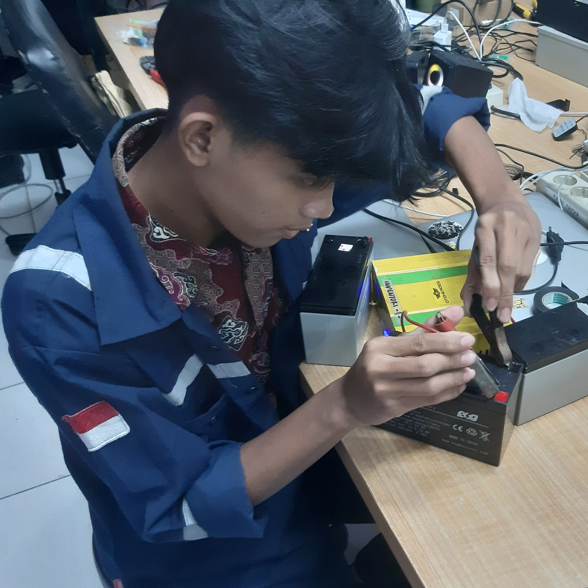
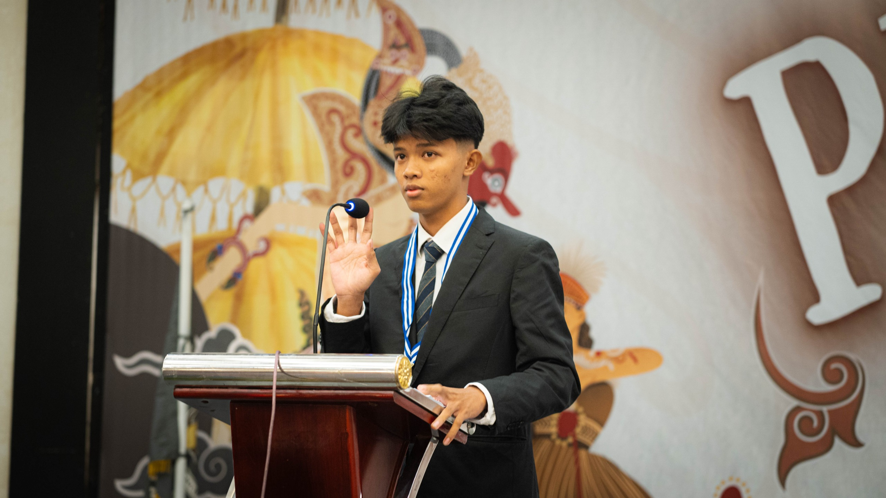
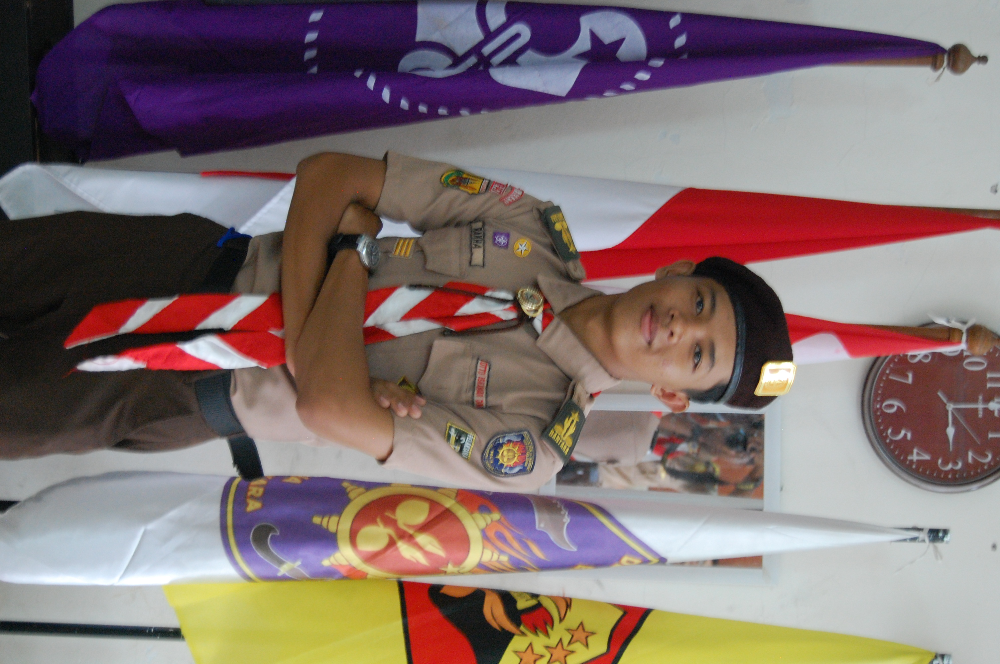

Rakha Aditya
Network Engineering Specialist & Leader
A top-performing TKJ (Network Engineering) graduate and former Student Council President. Skilled in IT support and leadership, blending technical expertise with strong team-building abilities.
Skills
Experience
IT Support & Network Intern - PT. Solusi Intek Indonesia
Handling network troubleshooting, software installations, and service provider network maintenance.

Student Council President (Ketua OSIS) - SMK Tunas Jakasampurna
Led student organizations, managed school events, and developed strong leadership skills.

Pradana Pramuka (Scout Leader) - SMK Tunas Jakasampurna
Responsible for leading the Scout troop, organizing scouting activities, and fostering discipline among members.

Dewan Kerja Ranting (DKR) Member
Participated in managing and coordinating scouting events and programs at the sub-district level.

Education
SMK Tunas Jakasampurna
Teknik Komputer Jaringan (Best Graduate)